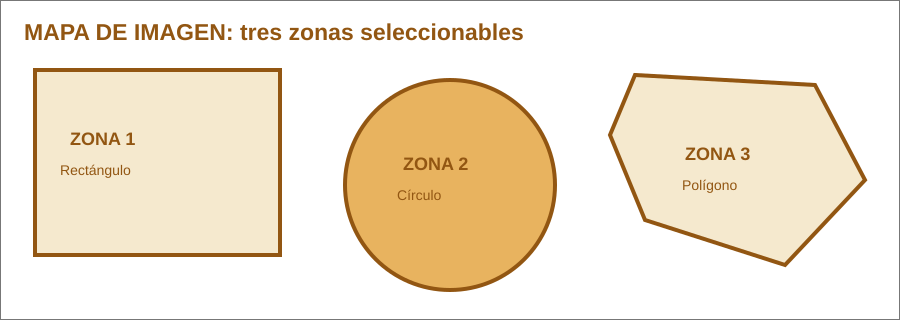

La imagen contiene tres zonas seleccionables. Cada zona tiene una forma y unas coordenadas propias. Al hacer clic en una de ellas, el navegador salta a la sección correspondiente.

<img src="mapa-zonas.svg" usemap="#mapa-zonas"> <map name="mapa-zonas"> <area shape="rect" coords="35,70,280,255" ...> <area shape="circle" coords="450,185,105" ...> <area shape="poly" coords="635,75,815,85,865,180,785,265,645,220,610,135" ...> </map> usemap relaciona la imagen con el mapa cuyo name coincide. shape indica la forma de la zona seleccionable. coords contiene las coordenadas de la zona en la imagen. href indica el destino al seleccionar la zona. alt proporciona un texto alternativo para la zona.
Destino de la zona definida con shape="rect".
Destino de la zona definida con shape="circle".
Destino de la zona definida con shape="poly".